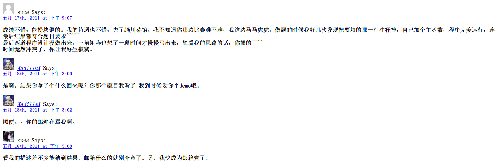

连连看核心算法小分享——1
写于
更新于 注：这篇文章我到现在也没有填第二篇的坑。数据没了重新从 Capture 里面取出来，看看舍不得，于是把这篇文章也拿回来了。权当纪念吧，以及当时和 Kalxd 的对话。
正文
刚忙完邀请赛，蹭了块铜。刚才在逛别人博客的时候看别人的文章，突然心血来潮想记一些东西。
连连看是我学HGE做的第一个小游戏，素材用的是QQ的。时间大概是去年国庆吧。好吧，废话不多说，就讲讲连连看怎么找到能消的两块吧。
首先来回顾一下消方块的规则，一共有三种可能性：
- 直线消除（包括水平或者垂直）
- 一个拐角消除
- 两个拐角消除
嗯，接下去我们就针对每种可能性开始写代码。
首先讲讲一些定义：
座标结构体，这个结构体包含了x、y的值以及一些座标中常用的函数。
1
2
3
4
5
6
7
8
9
10
11
12
13
14
15
16
17
18
19
20
21
22
23
24
25
26
27
28
29
30
31
32
33
34
35
36
37
38
39
40
41
42
43
44
45
46
47
48
49
50
51
52
53
54
55
56
57
58
59
60
61
62
63
64
65
66
67
68
69
70
71
72
73
74
75
76
|
struct CoorType {
int x;
int y;
CoorType()
{
x = -1, y = -1;
}
CoorType(int a, int b)
{
y = a, x = b;
}
void Set(int a, int b)
{
y = a, x = b;
}
CoorType & operator += (const CoorType &a)
{
y += a.y, x += a.x;
return *this;
}
bool operator != (const CoorType &a)
{
if(y != a.y || x != a.x) return false;
else return true;
}
bool isIll()
{
if(y >= 0 && x >= 0 && y < MAP_HEIGHT && x < MAP_WIDTH) return true;
else return false;
}
};
|
然后是关于地图数组的定义：
1
| int Map[MAP_HEIGHT][MAP_WIDTH];
|
接着是路径结构体：
1
2
3
4
5
6
7
8
9
10
11
|
struct PointPath {
bool bExist;
int Num;
CoorType Points[4];
};
|
接着可以正式开始了。首先我们来想一下，哪些条件各符合上面三种情况的哪一种。对于一条直线的，显然是x相等或者y相等；对于有一个转折点的话，我们只需要判断起点横向画线（或者纵向），然后终点纵向画线（或者横向），然后从起点到交点以及从交点到终点各可行不；对于两个转折点，其中一个转折点的x或者y跟起点的x或者y相等，另一个转折点跟终点的x或者y相等。于是这两个转折点就根据这样的性质进行枚举。因为连连看的地图比较小，所以这种O(n^2)的时间复杂度不碍事。
为了方便，我们写一个 Abled(CoorType, CoorType, bool, bool); 函数来进行判断两个点（当然两点是在同一直线上的）是否有同路（即中间没有东西挡着）。我们先放着这个Abled不管，先实现寻路过程吧。
我是用一个CMapSearch类来实现的，声明如下：
1
2
3
4
5
6
7
8
9
10
11
12
13
14
15
16
17
18
19
20
21
22
23
24
25
26
27
28
29
30
31
32
33
34
35
36
37
38
39
40
41
42
43
44
45
46
47
48
49
50
51
52
53
54
55
56
57
58
59
60
61
62
63
64
65
66
67
68
69
70
71
72
73
74
75
76
77
78
79
80
81
82
83
84
85
86
87
88
89
90
91
92
93
94
95
96
97
|
class CMapSearch
{
private:
int Map[MAP_HEIGHT][MAP_WIDTH];
PointPath dis[MAP_HEIGHT][MAP_WIDTH][MAP_HEIGHT][MAP_WIDTH];
STLMap grap;
CoorType dir[4];
PointPath Hint;
PointPath DoSearch(int y1, int x1, int y2, int x2);
public:
CMapSearch(int _Map[][MAP_WIDTH]);
~CMapSearch(void);
void LoadMap(int _Map[][MAP_WIDTH]);
bool Search();
void CreateSTLMap();
bool Abled(CoorType a, CoorType b, bool head = false, bool tail = false);
PointPath GetPath(int y1, int x1, int y2, int x2);
void GetRandomHint(int &a, int &b);
};
|
然后我这个分享里所讲的算法就是DoSearch和Abled函数了，因为其它函数就是用于“提示”道具的。在DoSearch中我们先定义两个临时变量，一个是返回值（一个PointPath），四个座标变量：
1
2
| PointPath ans;
CoorType a(y1, x1), b(y2, x2), c, d;
|
其中a、b表示起点和终点，c、d表示可能用到的两个转折点。
首先我们先来判断直线情况吧，这种情况比较简单：
1
2
3
4
5
6
7
8
9
10
11
|
if(a.x == b.x || a.y == b.y)
{
if(Abled(a, b, true, true))
{
ans.bExist = true;
ans.Num = 2;
ans.Points[0] = a, ans.Points[1] = b;
return ans;
}
}
|
对于这种情况，我们只需直接判断a、b直接有没有通路就好，如果有通路我们就将结果记录到ans中并返回即可。
而有一个转折点、两个转折点的情况以及Abled函数将在下一篇文章中小分享一下。
回忆时间
然后下面就是在这篇文章里面我跟 Kalxd 的对话了，想想现在真是沧海桑田啊。
CSS 样式早已经不在了，截图里面是一篇白板
